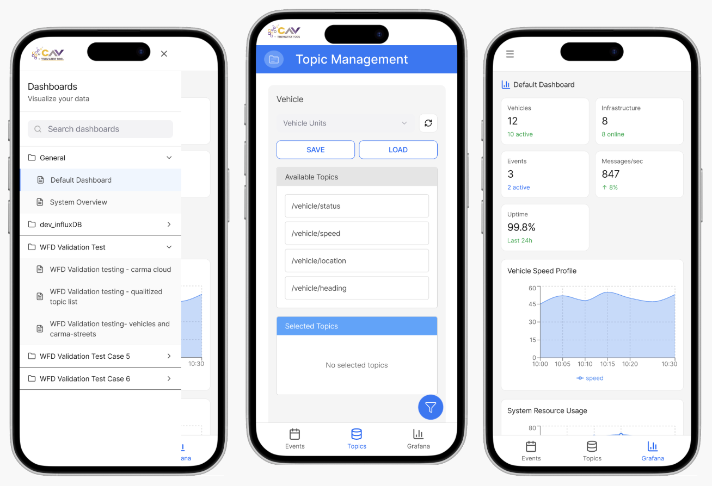

Project overview
This project focused on redesigning an existing web-based telematics UI into a mobile-first prototype so internal users could access critical vehicle and event data while running research studies in the field. The goal was to make key workflows faster on a small screen, reduce navigation friction, and support “in the moment” decision-making during active tests.

Problem
The existing telematics interface was built for desktop use. During on-road research studies, internal users often need to check vehicle and event details quickly while on the go. Desktop-first navigation, dense tables, and multi-step actions made it harder to access the right information fast in mobile contexts.
Goal
- Translate the desktop experience into a mobile-friendly flow for field use.
- Make vehicle and event information easy to scan with clear “next steps.”
- Reduce taps for the most common workflows used during research studies.
- Keep terminology and structure familiar for internal users.

Design approach
- Mobile-first information hierarchy: Prioritized “what to do next” for field use.
- Quick actions: Common tasks surfaced at the top of key screens.
- Scan-friendly layouts: Converted dense tables into cards and structured summaries.
- Consistency with the web UI: Kept core terms and workflows recognizable.
Outcome
- Created a mobile prototype concept that supports on-the-go research workflows.
- Reframed event and unit management for smaller screens with clearer hierarchy and actions.
- Defined a mobile structure that can scale to dashboards and vehicle data views.